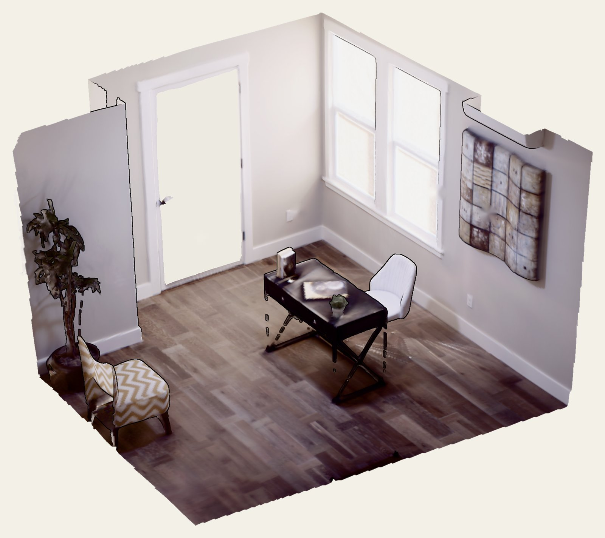
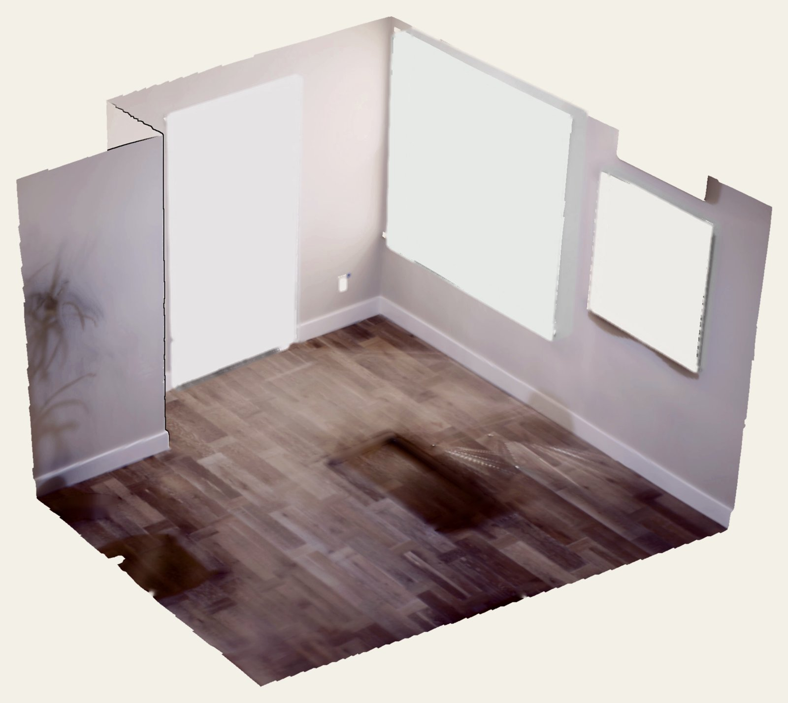

A Point-based Alternative for Grounded 3D Vision-Language Models
TL;DR
To learn grounded vision, 3D vision-language models are often given a box in the scene and asked to talk about the object inside it. But the box’s shape and location give the answer away.
We analyze this semantic leakage, both in the text prompt and in the model architecture, and propose a point-based alternative: query the model with a single 3D point. Existing 3D VLMs lose much of their accuracy under point prompts, so we introduce P³-VLM, a 3D VLM designed specifically for them.

Semantic leakage
A box tells the model what the object is without a need to look. The leak shows up in two places: in the text prompt the model gets, and in the architecture that processes it.
A box’s dimensions, aspect ratio and volume are highly predictive of its class: a tall, narrow box standing on the floor is probably a door. And because the room’s extents are usually known (coordinate normalization is frequent), the box also says where the object sits: on the floor, high on a wall, in a corner.
Try it. Here are the room extents and four boxes. Can you tell what each one was?

Pick a name for each box.
36.4%
of the guesses of a blind LLM (Qwen3-VL 4B, fine-tuned on box center, yaw and extent, with no visual encoder) were correct on Nr3D.
18.0%
Tuning the same blind LLM on a point instead of a box reduces the shortcut.
The leak also comes through the "visual features", specifically in object-detector VLMs (OD-VLMs). A detector segments the scene, and a 3D encoder turns each instance’s point cloud into tokens for the LLM. Does the 3D encoder add anything beyond the detector’s boxes? We replace LEO’s visual features with a 2-layer MLP encoding of each object’s box center and extent, and this itself seems enough...
Try it. Below is everything the box encoder passes to the LLM: just boxes, no points, no colors. Caption the scene.
Ground-truth caption
Full OD-VLM (LEO)
Box encoder + LLM
Box encodings alone get within 0.9 points of the full model. Its class predictions come mostly from the geometric prior, not from what the 3D encoder sees.
Nr3D · class accuracy (%)
The problem
We mark one object in the room, with a box or just a point, and the model has to describe it. Same models, only the prompt changes.
Nr3D · class accuracy (%)
Method
P³-VLM is detector-free and scene-centric. It works directly on a 3D Gaussian Splat of the room and feeds three complementary pathways into Qwen3-VL-4B.
3D Gaussian Splat scene
+ query point (x, y, z)
Question
“What is at this point?”
Location
look here
The voxel feature at the query point.
Task
look for
Scene tokens selected by the question.
Context
look around
8 global scene tokens.
Qwen3-VL-4B
LLM
“A white door next to the window.”
Results
Against box-based 3D models on the same benchmarks.
Nr3D grounded captioning
Class accuracy (%)
Sloppy boxes, off-centre points
Class accuracy (%)
Baselines get non-tight boxes; P³-VLM (point) gets points offset up to 0.9× the object’s extent.
Object counting in unseen rooms (GaussianVLM-OOD)
Exact match (%)
Citation
@inproceedings{p3vlm2026,
title = {P$^3$-VLM: A Point-based Alternative for Grounded 3D Vision-Language Models},
author = {Halacheva, Anna-Maria and Zaech, Jan-Nico and Dey, Sombit and Van Gool, Luc and Paudel, Danda},
booktitle = {Advances in Neural Information Processing Systems (NeurIPS)},
year = {2026}
}This research was partially funded by the Ministry of Education and Science of Bulgaria (support for INSAIT, part of the Bulgarian National Roadmap for Research Infrastructure).